I den här första datorlabben kommer ni bekanta er med programmeringsspråket R och dess arbetsmiljö RStudio.
Ta det lugnt
Det är många nya saker som presenteras i den här datorlaborationen, så var beredd på att inte allt kommer att sjunka in direkt. Försök att ta dig igenom hela texten, och övningarna. Du kan sen återkomma till denna labb på andra datorlaborationer för att repetera de delar du behöver. Ok, ta ett djupt andetag så börjar vi.
Instruktioner
💪 Avsnitt med den här symbolen är uppgifter där ni ska göra något.
Jobba med R på egen dator
Om du inte sitter i en datorsal på Campus måste du först installera R och sen RStudio. Se videon installera R och Rstudio för instruktioner.
För att starta RStudio letar du bara upp programmet på din dator och klickar på startikonen. När RStudio startas upp kommer det att se ut så här (kan se olika ut på olika datorer):
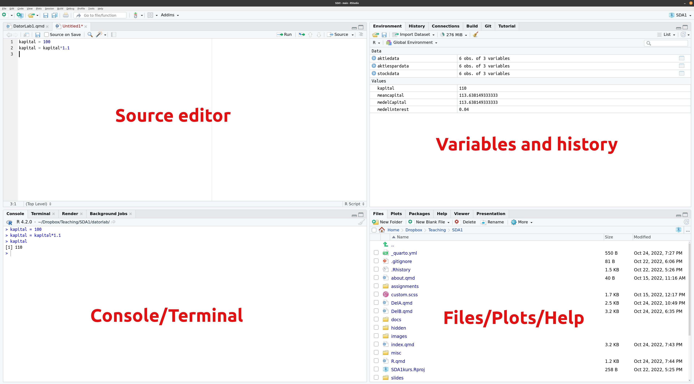
De olika delarna av RStudio kallas ofta för Panes. Vi kommer gå igenom dessa delar vartefter, men vi börjar med att utforska Console, även kallad terminalen.
1. Använda R som en miniräknare
Ett bra sätt för att vänja sig vid R är att använda R som en slags miniräknare. I fönstret Console i RStudio (vanligtvis nere till vänster) kan man skriva olika typer av kommandon som skickas till R för beräkning:
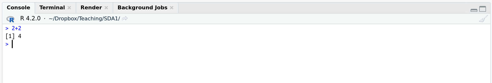
Tecknet > kallas för kommandoprompt (eller bara prompt) och är R’s sätt att tala om att det väntar på att ett nytt kommando ska skrivas in (vid det blinkande strecket). Vi säger att vi ‘skriver in något på prompten’.
Multiplikation och division
R använder * för multiplikation och / för division. Potenser (upphöjt till) skrivs med tecknet ^, så 3^2 är 9. Du skriver tecknet ^ genom att trycka Shift + tangent till vänster om Enter. Sen måste du trycka Mellanslag/Space innan du skriver exponenten, annars blir det 3² och det fungerar inte i R.
💪 Uppgift 1.1
Prova att skriva 2+2 efter det nedersta > tecknet i Console och sedan trycka på Enter-tangenten. R bör svara (returnera) med talet 4.
💪 Uppgift 1.2
Beräkna 3² (3 upphöjt i 2) i Console. [läs informationsrutan ovanför!]
💪 Uppgift 1.3
Skriv in talet (2+3)/(2+5) i Console och se att R svarar med 0.7142857.
💪 Uppgift 1.4
Du köper aktier för 100 kr. Avkastningen första året är 10%. Använd R för att beräkna värdet på ditt aktiekapital efter ditt första år som aktiesparare, dvs skriv in 100*1.1 och se R returnera 110.
2. Använda variabler i R
Du är nu inne på ditt andra år som aktiesparare. Avkastningen år 2 är 6%. Hur mycket aktiekapital har du efter år 2? Vi kan beräkna detta genom 100*1.1*1.06 i Console och få svaret 116.6 kr. Men finns det något sätt att återanvända vår tidigare beräkning 100*1.1 = 110 kr så vi bara behöver multiplicera detta tal med ökningen 1.06 för år 2?
Vi kan lösa detta genom att spara undan vår första beräkning i en variabel. Vi kan ge denna variabel (nästan) vilket namn vi vill. Jag kommer kalla den för kapital och börjar med att sätta värdet på variabeln kapital till 100, det ursprungliga kapitalet. Vi skriver kapital = 100 i Console. Vi kan sen testa att R nu faktiskt minns att kapitalet är 100 genom att bara skriva variabelns namn följt av Enter i kommandoprompten i Console:
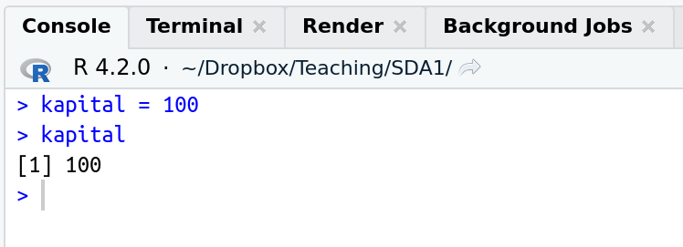
R skriver snällt ut det värde (100) som jag tilldelade variabeln kapital.
Språkbruk
vi säger att vi tilldelarvariabelkapitalvärdet100. Lite mer slarvigt säger vi: ‘vi sätter kapital till 100’.
Se upp!
Vi kan återkalla värdet 100 från variabeln kapital när som helst. Men om du stänger ner RStudio och sen startar om programmet (eller om RStudio låser sig) så minns inte R längre värdet på kapital. R minns faktiskt inte ens att det fanns något som hette kapital och kommer att klaga om du skriver kapital på prompten följt av Enter. R och RStudio minns bara variabeln inom en session, dvs tills du avslutar RStudio. Om man vill spara data mellan olika sessioner måste man spara ner variablerna på datorns disk (eller på någon lagring på internet). Mer om detta senare.
Learn the rules so you know how to break them
Istället för att skriva kapital = 100 så kan vi lika gärna skriva kapital <- 100 , där symbolen <- skrivs med de två tecknen < (mindre än) som finns långt ner till vänster på tangentbordet och - (bindestreck). Att skriva variabeltilldelningar med <- är egentligen den rekommenderade varianten i R, men jag tycker det är fult och föredrar =. 🤷
Vi kan nu beräkna kapitalet år 1 genom att multiplicera variabeln kapital med talet 1.1
Vi kan också skriva över värdet i variabeln kapital med ett nytt värde. Vi kanske vill att kapital alltid ska innehålla värdet på det aktiekapital som jag har just nu. Låt oss först ändra värdet på kapital till värdet efter år 1:
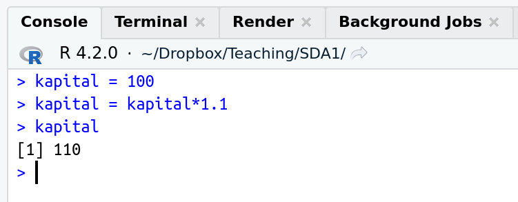
Notera speciellt raden kapital = kapital*1.1. R läser detta som:
Jag (R) ska plocka fram värdet 100 ur variabeln kapital. Sen ska jag multiplicera det med 1.1 för att få talet 110. Det talet 110 stoppar jag sen tillbaka i variabeln kapital.
Värdet på variabeln kapital är nu alltså 110.
Det fina med det här att vi nu kan fortsätta att ändra variabeln kapital efter att ett ytterligare år har gått, dvs värdet på ditt aktiekapital efter år 2:
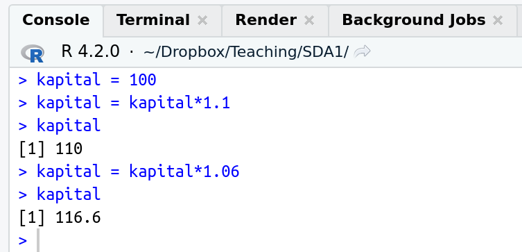
Variabeln kapital är nu 116.6 och du är redo för din kommande avkastning under år 3.
💪 Uppgift 2.1
Avkastningen år 3 blev tyvärr minus 4%. Uppdatera variabeln kapital ovan så att den visar att värdet på kapitalet efter år 3 är 111.936 kr. Notera att en minskning med 4% innebär att vi måste multiplicera med 0.96 (1-0.04). Multiplikation med tal mindre än 1 leder till en minskning av kapitalet.
3. Organisera dig med filmappar
Det är viktigt att ha ordning på sina filer på datorn och kunna tala om för R var dina filer finns så R kan läsa dem. Vi rekommenderar att du skapar en mapp/folder för varje kurs du läser. Spara inte alla filer på datorns skrivbord eller i mappen Downloads eller liknande. Gå till filhanteringsprogrammet på din dator och skapa mappen SDA1. Så här:
Windows: Starta programmet File Explorer och navigera (klicka) till den mapp där du vill skapa din kursmapp. Skapa en ny mapp med namnet SDA1.
Mac: Starta programmet Finder och navigera (klicka) till den mapp där du vill skapa din kursmapp. Skapa en ny mapp med namnet SDA1.
Linux: Starta programmet Nautilus (om du använder Ubuntu, annars kan du prova att söka på ordet files om din Linux-distribution använder en annan filhanterare). Navigera (klicka) till den mapp där du vill skapa din kursmapp. Skapa en ny mapp med namnet SDA1.
Svenska är fint, men inte i filnamn
Inga åäö!
Använd inte åäö i namn på filmappar eller filer.
Stor risk att du får problem då.
Dina filer kommer försvinna
Om du skapar en mapp på en dator i datorsalen så kommer den tyvärr inte att finnas kvar nästa gång du loggar in på annan dator, eller kanske inte ens på samma dator. Vi har förslagit till IT-avdelningen på SU att ordna studentkonton på datorerna med individuella lagringsutrymmen som automatiskt dyker upp som en mapp när ni loggar in i datorsalarna. Men i dagsläget finns tyvärr inte detta så man får själv spara ner sina filer på nätet (t ex med en tjänst som Dropbox eller OneDrive). Som student vid SU har man tillgång till 1TB lagring i OneDrive, se denna sida för mer info om hur man aktiverar detta. Ett annat sätt är att alltid bära med sig ett USB-minne och skapa SDA1 mappen på den.
💪 Uppgift 3.1
Skapa mappen SDA1 på din dator.
4. Använda Editorn (Source) för att spara kod
Skriva kommandon direkt i Console har en nackdel: R minns inte kommandona vi har skrivit i en tidigare Session (innan vi stängde ner RStudio). Varje gång vi startar upp RStudio måste vi skriva om våra kommandon om vi vill fortsätta våra beräkningar där vi slutade senast. 😤 (Det är inte riktigt sant, fliken History i övre högra delen av RStudio minns faktiskt gamla kommandon, men det är opraktiskt att förlita sig på History).
Vi skulle vilja skriva alla våra kommandon i en textfil som vi kan spara på datorns hårddisk (i din fina SDA1 mapp!) och sen bara köra om alla kommandon in en senare Session. Source Editorn in övre vänstra delen av RStudio används för just detta.
Om vi klickar på menyn File och sen under menyn New File och slutligen på RScript så öppnas en tom textfil i Editorn som heter Untitled1 eller något liknande. Här kan vi skriva in kommandon som vi vill spara för framtida sessioner. Vi kan t ex skriva in våra beräkningar av aktiesparandet:
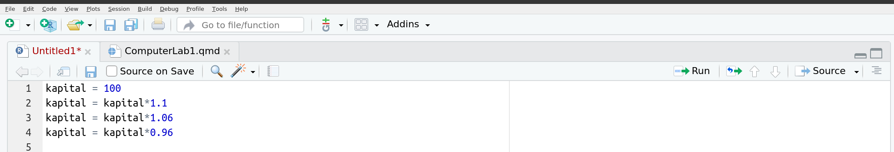
Vi kan spara filen genom att klicka på menyn File och sen på Save och sen navigera dig till mappen SDA1 genom att klicka i rutan som kommer upp. Döp filen till stock eller något annat namn som talar om vad filen innehåller (aktie heter stock på engelska). Klicka på Save/Spara. Filen kommer automatiskt att få filändelsen .R, dvs filen kommer alltså heta stock.R så RStudio vet att det är en fil men R kommandon. Ett samling kommandon kallas också för kod och vi säger att vi arbetar med en kodfil i editorn. Vi kan också säga att vi har skrivit ett program.
Vi kan köra alla kommandon i filen stock.R genom att klicka på Source - knappen uppe i högra hörnet av editorn:
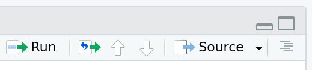
När säger att vi ‘kör kommandon’ menar vi att datorn utför (exekverar) våra kommandon, rad för rad. Man kan se det som Source-knappen skickar kommandona till Console så vi slipper skriva in dem där. Vi kan nu skriva kapital i Console för att se svaret 111.936.
När man arbetar med koden vill man ofta köra ett kommando i taget, och inte alla på en gång. Det kan man göra genom att placera markören (det blinkande strecket) på den rad som vill köra (exekvera) och sen klicka på Run-knappen i uppe i högre hörnet av editorn. Du behöver inte markera koden på raden, det räcker att bara placera markören någonstans på raden. Kortkommandot Ctrl + Enter gör samma sak.
Ofta ställer man markören på den första raden i koden och klickar på Run-knappen om och om igen för att köra varje rad, en efter en. Allt som körs, t ex olika variabler som kapital, finns tillgängligt i Console, om man t ex vill undersöka om variabeln verkligen har fått det värde som det var meningen att det skulle få.
Man kan också köra flera rader kod på en gång genom att markera raderna och trycka på Run-knappen.
💪 Uppgift 4.1
Kör hela filen stock.R genom att använda Source-knappen. Undersök vilket värde variabeln kapital i Console har efter att filen körts genom att skriva kapital följt av Enter.
💪 Uppgift 4.2
Du kanske märkte att inte mycket hände i Console när du klickade på Source - knappen. Det mest hände liksom bakom scenen, där kommandona i Editorn skickades över till Console. Vi skulle kanske vilja att vår kod skrev upp kapital i Console efter att alla ränta-på-ränta beräkningar gjorts. Prova att lägga till en rad i slutet av din kod med kommandot print och variabelns namn som du är intresserad av, dvs print(kapital). Klicka på Source - knappen igen och verifiera att värdet 111.936 skrivs ut i Console.
💪 Uppgift 4.3
Kör kommandot på rad 1 i stock.R genom att använda Run-knappen. Undersök vilket värde variabeln kapital i Console. Upprepa detta för de resterande raderna i stock.R.
5. Ställa in arbetsmappen (working directory) i R
Hittills har vi skrivit alla kommandon och tal (t ex kapital = 100), dvs vi har matat in data själva. Det är naturligtvis klumpigt om man har mycket data. Vi vill kunna läsa in hela datamaterialet från en fil. Här är en Excel-fil med data från 5 års investingar i aktier:
Notera att avkastningen (returns) anges i procent och är satt till noll under 2018 eftersom vi köpte aktierna precis i början av år 2019 (säger vi) och alltså inte fick någon avkastning under år 2018.
Excel-filen har jag döpt till stock.xlsx, men den kan döpas till precis vad som helst.
Variabelnamn som man ska undvika
Vi använder engelska namn på kolumnerna. Även om svenska tecken åäö går att använda i kod, är det ändå bäst att undvika dem genom att skriva på engelska. Du kan inte använda mellanslag (space) i variabelnamn, och variabelnamn får inte heller börja med siffror. Det finns också vissa ord som är reserverade och som inte får/ska användas som variabelnamn. Slutligen: R skiljer på små och stora bokstäver. Variabeln kapital är alltså inte samma som Kapital.
What’s in a name? Mer än du tror!
Ofta vill man ha ett variabelnamn som är lätt att förstå vad variabeln innehåller. Det är superviktigt för att andra ska kunna förstå ens kod, men framförallt för att du själv ska kunna förstå din egen kod om en vecka! 🥴 Använd _ (underscore) eller . (punkt) för att dela upp ord om det behövs. T ex my_pretty_little_variable = 100.
Om R ska kunna läsa in data från filen stock.xlsx så måste vi tala om var filen finns på vår dator. Enklast är då att ställa in Rs working directory, dvs det standardställe där R letar efter filer i den pågående sessionen. Det finns två sätt att göra detta, varav vi endast rekommenderar det första om man är absolut nybörjare. Rätt snart bör du lära dig att använda det andra sättet, som är smidigare i längden.
Working directory är den mapp som R kommer leta efter filer i. Ändra din arbetsmapp (working directory) i R till samma mapp SDA1 i Documents genom att välja menyn Session och sen Set Working Directory och slutligen Choose Directory… och sedan klicka dig fram till mappen SDA1.
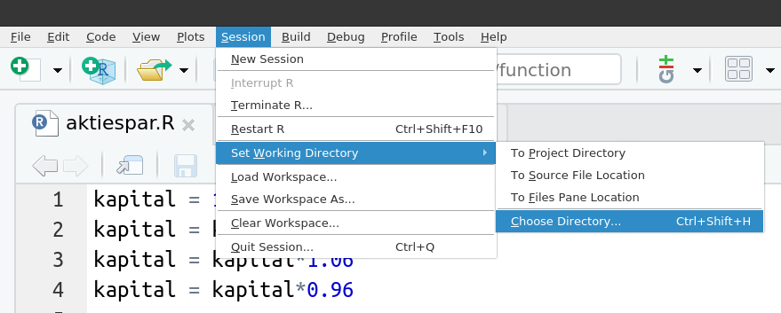
För att slippa att klicka sig fram via menyer hela tiden så är det praktiskt att ändra working directory i början av den kodfil som man jobbar med. Då kan man bara köra den kodfilen och working directory ställs in automatiskt. Kommandot setwd gör samma sak som punkten 1 gjorde via menyerna. Här måste vi dock veta sökvägen (path) till mappen, dvs datorns sätt att hitta till mappen SDA1. Sättet att skriva sökvägar på skiljer sig åt på Windows/Mac/Linux. I dessa exempel antar jag att din SDA1 mapp är placerad i mappen Documents.
På en Mac skriver vi kommandot: setwd('/Users/username/Documents/SDA1') där username ska ersättas med ditt användnamn på din Mac (namnet som kommer upp när du loggar in på datorn). Notera de små ‘blipparna’ kring filvägen i setwd kommandot.
På en Windows-dator skriver vi kommandot setwd('C:/Documents/SDA1'). Notera de små ‘blipparna’ kring filvägen i setwd kommandot. [Windows-sökvägar skrivs vanligtvis med backslash \. I RStudio skriver man ändå / för att matcha med Mac och Linux].
På en Linux-dator skriver vi kommandot setwd('/home/username/Documents/SDA1') där username ska ersättas med ditt användnamn som använder när du loggar in.
💪 Uppgift 5.1
Ställ in din SDA1 mapp som working directory i RStudio. Kontrollera att du lyckades genom att skriva kommandot getwd() i Console, som bör skriva ut sökvägen till din SDA1 mapp. Nu har du talat om för R att den ska leta efter filer i din kursmapp SDA1!
6. Läsa in data från fil
Vi vill nu läsa in data från Excelfilen stock.xlsx. Du kan ladda ner den filen här. Beroende på din dator så kommer en av två saker hända:
filen stock.xlsx hamnar automatiskt i mappen Downloads (eller liknande) på din dator. Du får då kopiera eller flytta filen till din working directory (din SDA1 mapp) genom att använda datorns filhanterare.
du får välja var du vill spara ner filen. Klicka dig fram till din working directory (din SDA1 mapp) och spara filen där.
R kommer nu att hitta filen och vi är redo att skriva kommandot som läser in filen. Eftersom det är första gången du läser in en Excel-fil i R behöver du göra lite grundjobb. Vi ska göra tre steg:
Installera R-paketetopenxlsx. R kommer med ett antal baskommandon förinstallerat. T ex har vi redan använt funktionensetwd() för att tala om för R vilken mapp som är vår working directory. Men många kommandon/funktioner i R måste laddas in via s k R-paket. Det finns R-paket för nästan allt man vill göra: läsa in data, gör olika typer av statistiska analyser etc etc. Paketet openxlsx är specialiserat på att läsa in Excel-filer i R. För att installera paketet kör vi kommandot install.packages('openxlsx') antingen genom att skriv in det i en kodfil och trycka på Run eller genom att skriva det direkt i terminalen. Efter det kommer R att skriva ut en massa mumbo-jumbo i Console som beskriver installationen. Paket kan ta någon minut eller mer för att installera. Om inga fel uppstår brukar installationsmeddelandet avslutas med något liknande: DONE (openxlsx) The downloaded source packages are in
följt av någon kryptisk sökväg till stället på din dator där paketet har blivit installerat.
Installation av paket behövs bara göras en gång på din dator. Du behöver inte installera om nästa gång du startar upp RStudio på nytt.
Paketet spotifyr kan t ex tala om för dig vilka dina fem mest spelade Spotify-låtar är. Se sidan StrangeR things för andra mer eller mindre konstiga paket. Och, ja, det är vanligt med ett stort R i namnet på R-relaterade saker. NördaR, du vet.
Ladda R-paketetopenxlsx. Kommandot library(openxlsx) laddar funktionerna i paketet openxlsx till R’s arbetsminne. Först efter denna kommando kan vi använda funktionerna i paketet. Notera att vi behöver ‘blippar’ kring paketets namn när vi installerar, men inte när vi laddar paketet. Ett paket som laddats in med library finns inte tillgängligt när du start om RStudio. Du måste alltså skriva library(openxlsx) för varje ny session där du vill läsa in Excel-filer. Det är därför bra att skriva in library(openxlsx) i kodfilen du ska använda för att läsa in Excel-filer.
Läs in data från Excel-filen genom kommandot/funktionenread.xlsx. Här hela kommandot (funktionsanropet): stockdata = read.xlsx('stock.xlsx', sheet = 1)
Det är några saker att reda ut här. Först, read.xlsx() är en funktion vilket betyder att det är ett kommando som gör något baserat på funktionens input-argument:
Det första argumentet 'stock.xlsx' är en textsträng (den har ‘blippar’) som talar om för read.xlsx()vilken Excelfil som ska läsas in. Vi behöver inte säga mer eftersom denna fil ligger i vår working directory, som ju R nu känner till.
det andra input-argumentet är sheet = 1, vilket säger åt read.xlsx() att data ligger i det första kalkylbladet i filen stock.xlsx. En Excelfil kan ju har flera kalkylblad, och vill man läsa det andra bladet ändrar man 1 till 2. (men stock.xlsx har bara ett blad, så prova inte detta för då kommer R att klaga).
Men vad betyder stockdata = i början av kommandot ovan? Jo, om R ska läsa in data till arbetsminnet så måste den ge denna data ett namn, vilket jag har valt till stockdata , men du får döpa den till (nästan) vad du vill. stockdata är en variabel, precis som kapital var en variabel tidigare. Variabeln kapital var en enkel form av en variabel som bara innehöll ett enda värde, t ex 100 i början av vårt sparande. Variabeln stockdata är mer komplex. Den innehåller en hel tabell med värden. Så kommandot
stockdata = read.xlsx('stock.xlsx', sheet = 1)
läses alltså av R som
Läs in första kalkylbladet av Excelfilen stock.xlsx till arbetsminnet och spara den inlästa tabellen som en tabell i variabeln stockdata.
R har lite olika varianter av tabellvariabler. Den viktigaste för oss på den här kursen är en s k dataframe. Du kan se att vår tabellvariabel stockdata faktiskt är en dataframe genom att skriva kommandot class(stockdata) i Console.
När man har läst in ett datamaterial är det bra att ta en snabbtitt på den inlästa tabellen för att se att den blev korrekt inläst. Precis som vi gjorde med variabel kapital för att se dess värde (t ex 100) så kan skriva stockdata i Console för att se dess värde (som ju är en tabell). Om man har en tabell med många rader så blir det fort jobbigt att skriva ut alla rader. Kommandot head() är då praktiskt, som bara skriver ut det första 6 raderna av tabellen. Här har vi alla kommandon som krävs för att ladda in data och skriva ut fint på skärmen (förutom install.packages('openxlsx') som jag antar att du redan har kört för att installera paketet).
library(openxlsx)stockdata =read.xlsx('stock.xlsx', sheet =1) # läser in Excel datahead(stockdata)
I min kod ovan skrev jag # läser in Excel data på en rad. All text som kommer efter tecknet # är en s k kommentar i R. Kommentarer ignoreras av R och är därför ett bra sätt att skriva små saker som gör koden mer lättläst. Du måste ha ett # -tecken framför varje rad som du vill “kommentera ut”.
Ange sökväg till filer som inte är i din Working directory
Istället för att placera alla filer i din working directory SDA1 kan man istället ange sökvägen till filen när man läser in den. Om jag t ex har sparat filen i mappen Downloads på en Windows-dator så skriver jag stockdata = read.xlsx('C:/Downloads/stock.xlsx', sheet = 1)
💪 Uppgift 6.1
Prova att ladda ner Excelfilen stock.xlsx och spara den i SDA1 mappen. Läs sen in filen i R med kommandot stockdata = read.xlsx('stock.xlsx', 1, colNames=TRUE) . Skriv sen head(stockdata) i Console för att titta på data.
Prova nu att läsa in data med kommandot stockdata = read.xlsx('stock.xlsx', 1, colNames=FALSE) och notera skillnaden genom att återigen skriva head(stockdata) i Console.
💪 Uppgift 6.2
Ändra värdet på variabeln returns år 2023 till 0.05 i stockdata tabellen genom att skriva stockdata[6,3] = 0.05 i Console. Det här kommandot läser R som:
Värdet i tabellen stockdata på rad 6 och kolumn 3 ska ändras till (tilldelas) värdet 0.05.
Prova att skriva stockdata i Console för att kontrollera att värdet faktiskt ändrades.
💪 Uppgift 6.3
Spara den ändrade stockdata-tabellen till disk genom att skriva följande kommando i Console:
save(stockdata, file="stockdata2.Rdata")
vilket sparar den ändrade stockdata tabellen till filen stockdata2.Rdata i din working directory (SDA1-mappen). Filformatet Rdata är R’s eget filformat. Du kan i en senare session läsa in stockdata enkelt genom kommandot
load("stockdata2.Rdata")
vilket kommer läsa in tabellen stockdata i R’s arbetsminne.
Läsa in data från andra filformat än Excel
Datamaterial kan också komma från rena textfiler (.txt) och s k csv filer. Se reading data from a file.
7. Analysera data
När du har läst in datamaterialet i minnet så är det dags att analysera det. Låt oss göra en enkel graf av variabeln capital över åren (year):
plot(capital ~ year, data = stockdata)
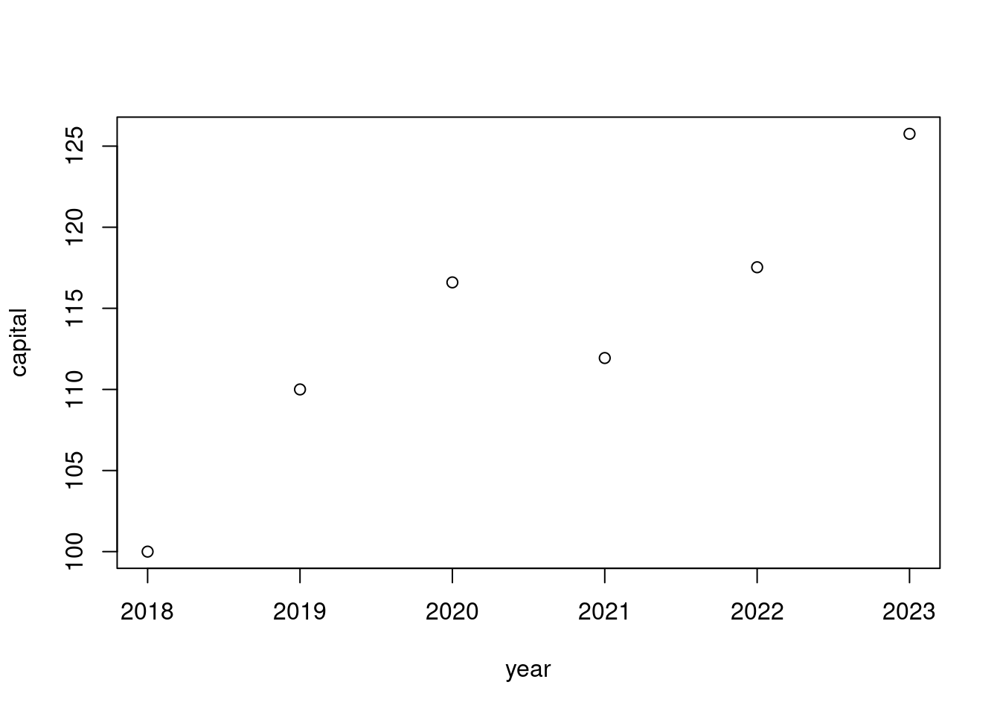
Här har vi använt funktionen plot() med två argument. Argumentet capital ~ year talar om för plot() att den ska göra en graf (‘plotta’) variabeln capital på y-axeln och variabeln year på x-axeln. Vi säger att vi ‘plottar capital mot year’. Men capital och year är faktiskt inte variabler i Rs arbetsminne. Där finns bara en tabell (dataframe) som heter stockdata med kolumner som heter capital och year. Så vi måste tala om för plot() att vi vill hämta variablerna capital och year från datamaterialet/tabellen/dataframe stockdata, vilket är precis vad som händer i det andra argumentet data = stockdata. Tecknet ~ brukar läsa som tilde och kan skrivas genom tangenterna Alt gr och tangenten till vänster om Enter.
Så kommandot
plot(capital ~ year, data = stockdata)
läses av R som
plotta variabeln capital mot variabeln year, där både dessa variabler är kolumner i datamaterialet stockdata.
Om vi vill beräkna medelvärdet på en variabel kan vi använda funktionen mean(). Men om vi vill beräkna medelvärdet av variabeln capital med kommandot mean(capital) så får vi problemet att R inte har en variabel capital i minnet; capital är ju bara en kolumn i datamaterialet stockdata. Hur säger vi till R: gör om kolumnen capital i datamaterialet stockdata till en egen variabel och beräkna dess medelvärde (mean på engelska). Lösningen att använda $-tecknet för att plocka ut kolumnen returns som en egen variabel: stockdata$capital och sen använda mean() funktionen. Vi kan göra detta på samma kodrad och skriva ut resultatet:
capital =mean(stockdata$capital)capital
[1] 113.6381
Kodraden meancapital = mean(stockdata$capital) säger alltså till R att
Plocka ut kolumnen capital från datamaterialet stockdata och beräkna dess medelvärde.
Genom att explicit plocka ut kolumner på detta sätt kan vi göra grafen med ett lite annorlunda kommando:
plot(x = stockdata$year, y = stockdata$capital)
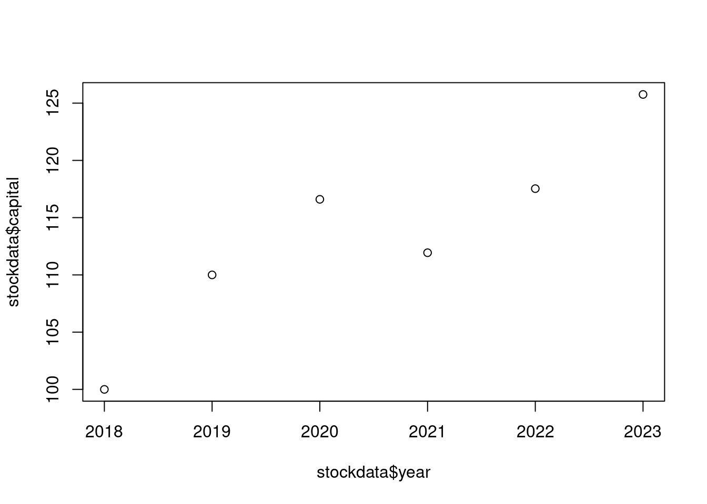
där vi inte längre måste använda argumentet data = stockdata för att tala om var dessa variabler kommer från. Men det förra kommandot plot(capital ~ year, data = stockdata) är nog ändå mer lättläst, tycker jag.
💪 Uppgift 7.1
Läs återigen in data med stockdata = read.xlsx('stock.xlsx', sheet = 1). Gör en graf där du plottar variabeln returns mot year.
Här är hela koden i ett stycke:
setwd('/home/mv/Dropbox/Teaching/SDA1/datorlab/lab1') # I have a Linux computer and my data is in this pathlibrary(openxlsx) stockdata =read.xlsx('stock.xlsx', sheet =1)stockdata =data.frame(stockdata)meancapital =mean(stockdata$capital)plot(capital ~ year, data = stockdata)
Notera att vi kan skriva kommentarer i koden genom tecknet # innan kommentaren. Allt efter tecknet # ignoreras av R när den läser koden. Det kan vara ett bra sätt att förklara en kodrad för användaren.
8. Några extra tips
Om du trycker på ‘pil-upp’ ⍐ tangenten i Console så kan du stega dig tillbaka till gamla kommandon som du har skrivit.
Om du vill städa upp i Console kan du skriva Ctrl + l för att rensa Console från text (dvs ett litet L). Dina variabler blir kvar i arbetsminnet.
History-fliken uppe till höger i RStudio visar alla tidigare kommandon.
Environment-filken uppe till höger i RStudio ger dig information om de datamaterial och variabler som R har i arbetsminnet. Prova genom att definiera en ny variabel c=100 i Console och hur den dyker upp i Environment-fliken. Prova att klicka på den blå pilen framför stockdata, du kommer se kolumnerna i det datamaterialet.
Files-fliken nere till höger i RStudio är en inbyggd filhanterare. Den visar filerna i ditt working directory och du kan även hantera filer där (ta bort, döpa om osv).
I Help-fliken kan du söka på hjälp på olika kommandon. Prova att skriva in mean. Du kan även få hjälp genom att skriva t ex ?mean i Console.
9. Datastrukturer
R kan spara data i olika datastrukturer. Vi definerade tidigare variabeln kapital och tilldela denna variabel värdet 100 genom kommandot kapital = 100.
Ofta vill man spara mer än ett tal i samma datastruktur. Ett sätt är att skapa en vektor med kommandot c()
Den nya variabel capital_all_years innehåller alltså kapitalet för alla år. Men om jag skulle vilja ‘plocka ut’ kapitalets värde vid det tredje året? Då kan man indexera vektorn genom hakparenteser (brackets) [], så här:
capital_all_years[3]
[1] 116.6
Man kan också plocka ut flera värden samtidigt, t ex år 3 och 5, med kommandot
capital_all_years[c(3,5)]
[1] 116.600 117.532
Notera att vi indexerade med en vektor, dvs vi använde c() kommandot eftersom vi vill tala om för R att plocka ut fler än ett värde.
Vi har redan sett en av Rs viktigaste datatyper: en s k dataframe. En dataframe är en tabell med information om vad kolumnerna heter, och ibland även vad raderna heter. Ett exempel är vår stockdata som är dataframe med tre kolumner: year, capital och stock. Vi kan se att det är en dataframe genom att använda kommandot class():
class(stockdata)
[1] "data.frame"
Vi har faktiskt redan använt idéen med att plocka ut värden genom indexing in dataframes tidigare när vi skrev stockdata[6,3] för att plocka ut värdet på rad 6 och kolumn 3 i tabellen/dataframe. Och vi såg att vi också kunde ändra värdena i tabellen genom tilldelning: stockdata[6,3]=0.05 . Samma sak kan man göra med en vektor, t ex så gör kommandot capital_all_years[5] = 200 att vi ändrar kapitalet år 5 till 200 i vår vektor som innehåller alla års kapital.
Det finns en annan slags tabell som kan vara bra att känna till i R, en s k matris (eng. Matrix). Matriser är som dataframes, men innehåller inte information om namnet på kolumnerna. Å andra sidan kan man göra matematiska beräkningar med hela matriser, men det är inget vi gör på denna kurs. Anledningen till att vi nämner matriser här är att man ibland måste göra om en matris till en dataframe eller tvärtom. Vissa R-program vi bara jobba med dataframes och klagar om man försöker få det att jobba med en matris. Låt oss skapa en matris som jag kallar A :
A =matrix(c(11,2,4,5,62,3), 3, 2)A
[,1] [,2]
[1,] 11 5
[2,] 2 62
[3,] 4 3
vilket är en matris (tabell) med 3 rader och 2 kolumner (som vi skapar från en vektor med 6 tal). Om vi använder class()-kommandot så ser vi att A mycket riktigt är en matrix, vilket är engelska för matris:
class(A)
[1] "matrix" "array"
Om vi vill göra om en matris till en dataframe så använder vi kommandot
B =as.data.frame(A)B
V1 V2
1 11 5
2 2 62
3 4 3
där R bestämmer att kolumnerna ska heta V1 och V2 (en dataframe måste ha namn på kolumnerna i tabellen). B är alltså nu en dataframe, vilket man kan testa genom:
class(B)
[1] "data.frame"
En annan viktigt datatyp vi vill nämna är en s k sträng (eng. string), vilket kallas för character i R och är en variabel som innehåller text. Värdet på en sträng-variabel skriv innanför citattecken:
mittnamn ="mattias"class(mittnamn)
[1] "character"
Man kan även använda enkla ‘blippar’ kring strängens värde, dvs mittnamn = 'mattias'.
Om vi t ex använder names() kommandot på vår stockdata dataframe så får vi en vektor med strängar (en vektor eftersom det finns fler än ett kolumnnamn i stockdata):
names(stockdata)
[1] "year" "capital" "returns"
Slutligen finns datatypen list i R. En list (eller lista på svenska) är en vektor på steroider. En vanlig vektor måste innehålla data av samma sort, t ex en vektor med numeriska tal x = c(1,4,5) eller en vektor med strängar (text): c("mattias","adam","elma") . En lista är mer generell och kan innehålla data av olika sort:
my_list =list(a =2, b ="hej", d =c(4,5,2))my_list
$a
[1] 2
$b
[1] "hej"
$d
[1] 4 5 2
Jag kan döpa elementen i listan vad jag vill, här kallade jag dem a, b och d (jag vill undvika bokstaven c eftersom det är symbolen för att skapa vektorer). Notera att elementet a innehåller ett enda tal, b en sträng och d en vektor med tre tal. I utskriften ser man också att det olika listelementen med ett $-tecken framför. För att t ex plocka ut listelementet d kan man nämligen skriva
my_list$d
[1] 4 5 2
Känns det bekant med $-tecken för att plocka ut saker? Vi har redan sett att man kan plocka ut en kolumn i en dataframe (tabell) genom att skriva t ex stockdata$returns . En dataframe är nämligen egentligen en slags lista.
Hitta lätt bland alla fickor
Om du skriver my_list$ (inklusive $-tecknet) i Console kommer det att dyka upp en lista med alla element som finns i listan my_list. Använd pil-tangenterna (upp och ned) för att välja det element du är intresserad av och tryck Enter. 🤩
Vi ska slutligen presentera ytterligare en viktig datatyp i R: factor. Prova att skriva in kommandot str(stockdata) i Console. Kommandot returnerar variablernas namn och datatyper, vilket ju är numeric för alla våra tre kolumner year, capital och returns i tabellen. Men tabellkolumner kan bestå av bokstäver (strängar) eller kategoriska variabler (t ex man och kvinna). Kategoriska variabler kallas för faktorvariabler i R.
R har ett antal inbyggda datamaterial, t ex datamaterialet warpbreaks som innehåller information om antalet fel (breaks) vid vävning för två olika typer av garn (wool) och tre olika spänningar av vävstolen (tension). Vi börjar med att tilldela datamaterialet till variabeln garndata genom att skriva garndata = warpbreaks i Console. Skriv head(garndata) för en snabb titt på de första observationerna. Som du ser är breaks en numerisk variabel (eller snarare en kolumn in tabellen), men både wool och tension är kategoriska faktorvariabler (wool kan bara vara av garntyp A eller B, och tension kan vara låg (L), mellan (M) eller hög (H)). Vi kan se detta mer exakt genom att skriva str(garndata) i Console:
där vi ser att wool är en faktorvariabel med två olika värden (levels, eller nivåer på svenska), medan tension har tre nivåer. Vi ser även att breaks är en numerisk variabel. Vi kan även se denna information i den övre högra panelen i R under fliken Environment genom att klicka på den lilla pilen på garndata.
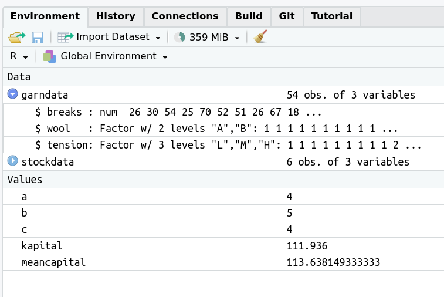
10. Funktioner
Vi har sett idén med funktioner tidigare: en funktion gör något med data. I matematikens värld är en funktion \(f\) en slags maskin som använder en input\(x\), gör några matematiska beräkningar, och ger tillbaka en output\(y\). Vi brukar skriva funktionen som \(y=f(x)\).
En funktion i R är en liknande sak: den använder ett eller flera inputs och ger tillbaka ett eller flera outputs. Det kan handla om ren matematisk funktion, som kvadratroten \(\sqrt{x}\) av ett tal \(x\), vilket i R beräknas av funktionen sqrt:
x =4y =sqrt(x)y
[1] 2
men det kan också vara något mer komplicerat som t ex att läsa in data från en Excel-fil:
stockdata =read.xlsx('stock.xlsx', sheet =1)
där read.xlsx är en funktion som tre input-argument filnamn (som en sträng!), talet 1 för att vi vill läsa det första bladet. Funktionen read.xlsx ger tillbaka en (tibble) dataframe som output med data.
Det fina med programmeringsspråk är att man kan skapa egna funktioner som gör just det jobb som man behöver. Om jag t ex vill skapa en funktion som beräknar ränta-på-ränta effekten på ett sparkapital (med samma ränta varje år) så kan jag skriva ihop följande funktion:
Man använder alltid ordet function där att definiera en funktion.
Funktionens input-argument skrivs inom parenteser. Vilka namn du väljer är helt fritt, men det måste vara samma variabelnamn som du sedan använder innanför de s k måsvingarna {} som innehåller den faktiska koden som gör jobbet.
Funktionen tilldelas en variabel som jag gett namnet capital_interest , vilket är ett namn du väljer helt själv.
Koden använder ränta-på-ränta formeln \(capital\cdot interest^{years}\) , dvs räntan, angett som 1.1 om du får 10% ränta, upphöjs i antal sparandeår. Upphöjt skrivs som ^ i R.
Funktionen avslutar med ordet return och den variabel du vill att funktionen ska ge tillbaka som output.
Om jag sen vill använda min funktion för att se hur min hundring på banken kommer att utvecklas under 20 år med 5% ränta så skriver jag (jag anropar funktionen):
my_money =capital_interest(100, 1.05, 20)my_money
[1] 265.3298
Vi sa ovan att vi tilldelade variabeln capital_interest en funktion. 🤯 Wait, what? Jo, faktiskt, om vi undersöker vilken typ av variabel capital_interest är så är det faktiskt en funktion:
class(capital_interest)
[1] "function"
När vi skrev variabel kapital i Console skrev den ut värdet, t ex 100. Vad händer om vi göra samma sak med vår funktionsvariabel capital_interest ? Hela funktionen skrivs ut som text!
Vi kommer inte att skriva egna funktioner på kursen. Men du kommer att använda funktioner. Och då kan det vara bra att veta att någon har skrivit dessa funktioner på precis det sätt som vi skapade funktionen capital_interest ovan.
En sista sak: vissa funktioner har inga inputargument och ibland inte heller några outputs. Det betyder inte att funktionen inte gör något, utan den har istället vissa sido-effekter som inte alltid syns. setwd är t ex funktion som har sökvägen som input, men har inga output, men däremot sidoeffekten att ändra working directory. Funktionen getwd() har inga input-argument men ger tillbaka din nuvarande working directory som output.
11. Tre dialekter av R
Man kan dela upp R’s språk i tre slags dialekter, dvs tre olika kommandon (syntax) för att göra ungefär samma sak:
Base-R - den ursprungliga syntaxen in R
Formula syntax - syntax som via paketet Mosaic har utvecklats för undervisning i statistik
Tidyverse - en modern syntax utvecklat av personerna bakom RStudio.
I SDA1 kommer vi försöka använda Formula syntax som mycket som möjligt, med inslag av Base-R. Tidyverse-kod kan ofta vara extremt effektiv, men tar för lång tid att lära sig på en grundkurs i statistik. Vi kommer dock då och då att visa hur man gör samma sak i de olika dialekterna, men på ett sätt som inte stör flödet för den student som helst vill hålla sig till ett sätt. Vi använder ikoner som du som student kan klicka på för att se ett kommando i olika dialekter. Här är ett exempel (prova att klicka ikonerna i höger-marginalen):
I Formula syntax har vi redan sett att vi kan göra en scatter plot med kommandot
plot(mpg ~ hp, data = mtcars, main ="Cars fuel usage")
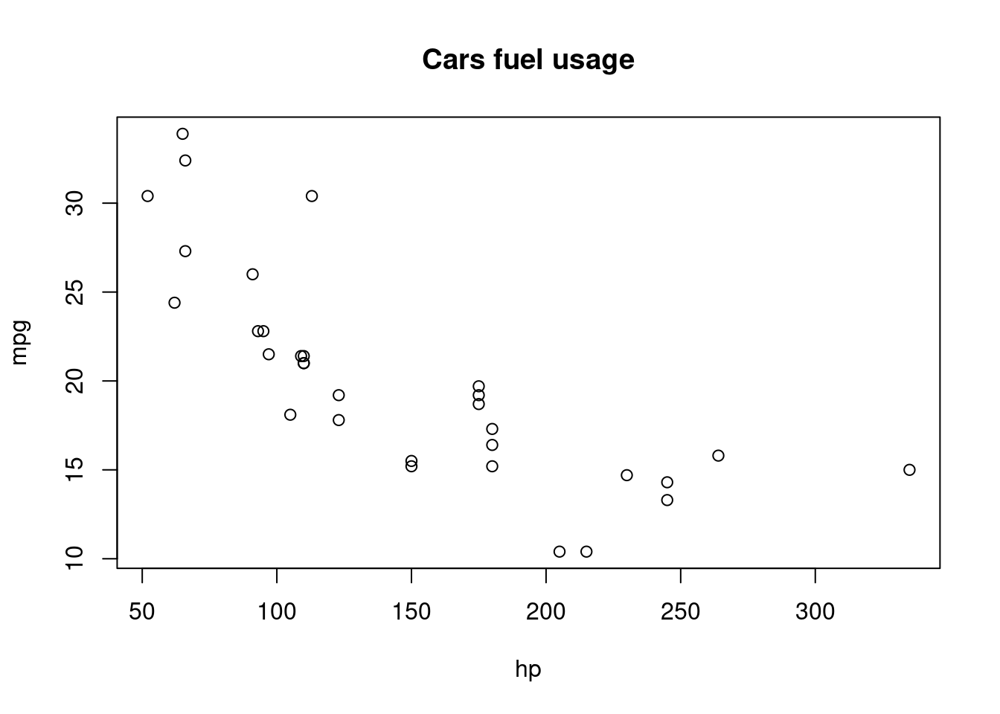
Om man vill ha plottar som liknar de fina plottarna i Tidyverse, men fortsätta att skriva den enklare formula-syntaxen så kan man använda paketet ggformula:
library(ggformula)gf_point(mpg ~ hp, data = mtcars, title ="Cars fuel usage")
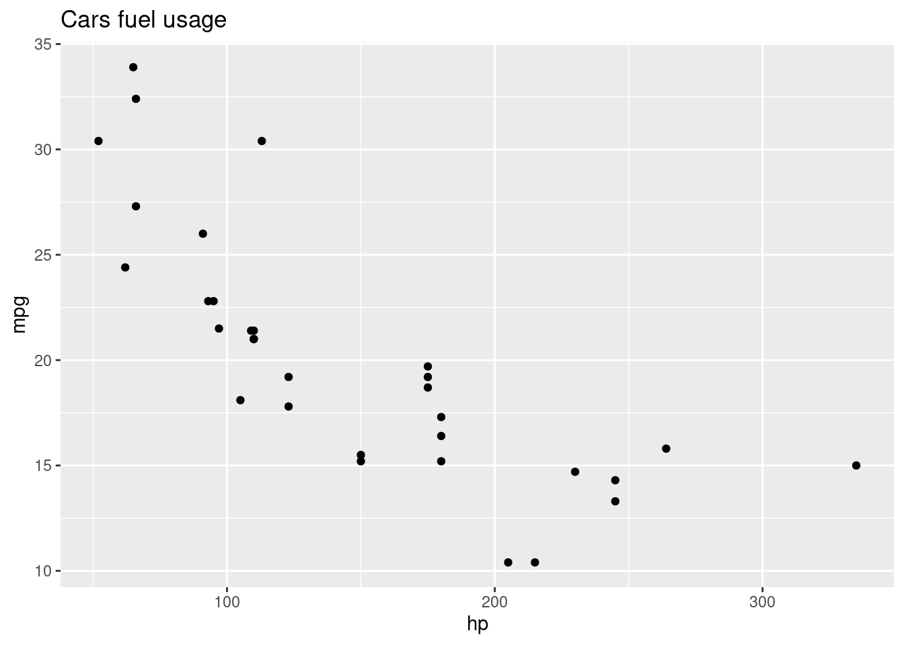
12. Sammanfattning
I den här laborationen har du lärt dig:
Använda R som en miniräknare.
Använda variabler som ett sätt att spara värden i en session.
Sätta working directory så R kan hitta dina filer.
Skriva kod både i Console och Editorn.
Läsa in data från fil och göra inledande grafer och medelvärdeberäkningar för dataanalys.
Vi har också tittat på datastrukturer i R och t o m nosat lite på funktioner i R.
End of the line
Om du har kommit hit utan att slita ditt hår alltför många gånger så tycker jag att du ska vara väldigt nöjd med dig själv. Du har redan lärt dig massor om R. Ditt framtida jag kommer att tacka dig!